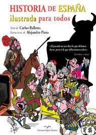
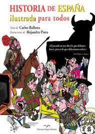

PAÍS ofrece la colección ‘Historia de España’ para los más pequeños
Los libros incluyen los acontecimientos más relevantes desde la prehistoria hasta hoy.
EL PAÍS ofrece a sus lectores la colección Historia de España, una serie de libros para que los más pequeños aprendan sobre el pasado de España
a la vez que se divierten con sus protagonistas. La primera entrega está disponible a partir de este domingo por 1,99 euros,
y las siguientes llegarán cada semana por 7,99 euros a los quioscos con el diario. También se puede conseguir en la página web de Colecciones de EL PAÍS.
Los lectores acompañarán a Carmen y a Marco en los fascinantes relatos que les cuenta su abuelo, todo un apasionado de la historia.
Viajarán con sus nuevos amigos a través de los episodios más relevantes del pasado, remoto y cercano, y vivirán los hechos que marcaron
la historia de España, desde la prehistoria hasta la actualidad.
La colección se compone de 15 libros. En el primero, La prehistoria, disponible a partir de este domingo,
los pequeños lectores conocerán a Miguelón, uno de los primeros homínidos que habitó las tierras del continente europeo y
del que solo se conserva su cráneo, descubierto en el yacimiento de la Sierra de Atapuerca. Con 400.000 años sirve para
conocer mejor a nuestros antepasados.
En la segunda entrega, Hispania romana (15 de octubre), los lectores aprenderán todo sobre el apasionante mundo de los gladiadores y
las carreras de carros; disfrutarán del teatro y las termas.

 

EL PAÍS-Madrid - 07 OCT 2023 - 05:30 CEST
Volver al inicio Volver a Cultura